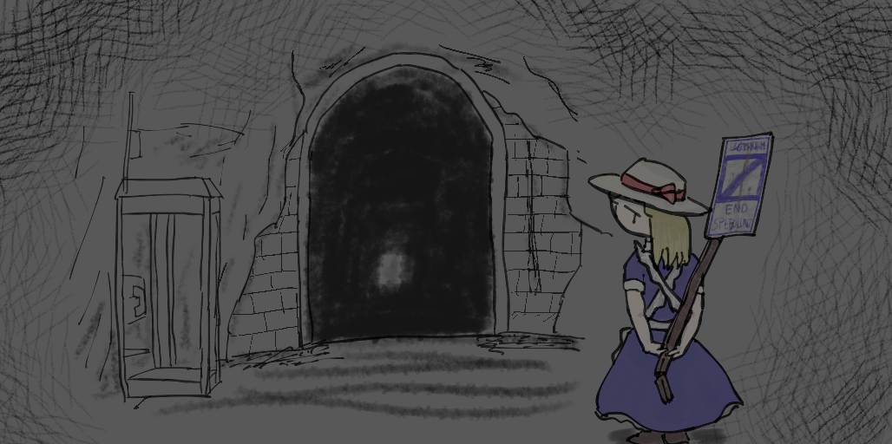

𧃴折り
アクセスカウンタの置き方が分からなかったのでキリ番踏んでもバレません。うわーん(^^;
雑な自己紹介。
最終更新日：2026年1月3日
駄文と日記の詰め合わせ。
最終更新日：2026年1月3日
雑記以上、記事未満。写真多め。
最終更新日：2026年1月3日
リンク置き場。言うほど異的じゃ無い。
連絡などは各種SNSにてお願いします。
misskey.io / @mizutisann
Discord / mizutisann_6806
Twitter / mizutisann
当ペエジは、横1000pxぐらいで見ることを想定してます。多分。
おおよそリンクフリーです。バナアは持ち帰ってテキトーにお使いくださいな。